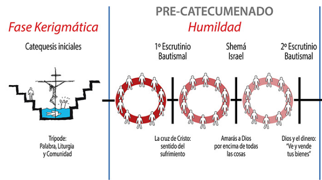

Este es un paso hasta el segundo escrutinio hacia el catecumenado
Este es un tiempo para ver si queremos ser cristianos
Todos los esposos(esposas) de las hermanas que no caminan puede venir a la comunidad - Palabra/Eucaristía/Convivencia - Si desean hacer el trípode cuando se realice una convivencia de Primer escrutinio inscriben su nombre en la BJ

Durante este tiempo se preparan temas de la historia de la salvación, para ello se divide la comunidad en grupos.
Conformados los grupos, cada uno de ellos tiene dos (2) meses para realizar la preparación, para lo cual se reúnen de forma continua y realizan la entrega en un mes (4 martes).
Se prepara de la Biblia de Jerusalén
Si es necesario nos podemos apoyar en materiales como el Diccionario Leon Defour, Catecismo, Libros y documentos oficiales de la Iglesia católica.
Es necesario determinar donde empieza el tema y donde termina.
Se realizan todas las lecturas, documentos o material de apoyo de corrido.
En una de las reuniones de preparación se escogen las lecturas, se proclaman, se realizan ecos y se asigna quienes realizan las moniciones.
Presentación del tema
Se eligen entre 5 a 7 lecturas, todas de la biblia
Preferiblemente la última lectura sea un evangelio - pueden ser todos evangelios o la última una carta -.
Estas lecturas son seleccionadas en una noche de preparación del grupo.
Se prepara la asamblea con : cruz, florero, atril, Biblia grande de Jerusalén.
Presentación del tema:
Se realiza una catequesis sobre el tema.
Se divide el tema en partes = número de catequesis = número de integrantes de grupo.
10 minutos cada uno - todo oral - no fichas, ni ayudas, ni resúmenes.
No hay lugar para que ningun hermano no haga catequesis - se pide poder del Espíritu Santo.
Se prepara asamblea : cruz, florero, sin atril.
Celebración :
Celebración doméstica
El encargado de llevar la celebración es el integrante del grupo que entrega.
Encuesta: Consta de tres (3) preguntas que salen de la preparación del tema realizada durante los dos (2) meses. Cada pregunta puede tener una cita de apoyo al final de la lectura de la pregunta.
Se empiezan todas las celebraciones en casa a las 7:00 pm
Celebración en casa:
Se escogen : 1 Histórico / 1 Profético / 1 Carta / 1 Evangelio o 1 Carta
Celebración :
Monición ambiental
Primera lectura
Segunda lectura
Monición
Proclamación
Canto de respuesta
Tercera lectura
Evangelio
Ecos de la palabra
Oraciones - antes de las oraciones responsable hace una oración por los hermanos que no han podido asistir a la celebración - se leen de la Biblia Grande de Jerusalén
Saludo de Paz
Bendición final
Anuncios por parte del responsable
El equipo que entrega prepara la convivencia, de acuerdo al Ordo determina la semana correspondiente para lo laudes
Escoge la lectura de la preparación
Reserva sitio para la convivencia
Todos los hermanos llevamos la biblia de Jerusalén, lápiz y cuaderno
Celebración
Monición ambiental - a cargo del grupo que entrega
Oración - responsable
Laudes - salmos cantados o proclamados
Benedictus / Oraciones / Paz / Bendición
Se continua normalmente con el resto de la convivencia….
Al cierre de la convivencia se selecciona el siguiente grupo para que prepare el siguiente tema, entre los hermanos que no se encuentran ni entregando , ni preparando
Dado que la comunidad es pequeña, para la conformación de los grupos a cargo de las celebraciones de los sábados participan todos los hermanos excepto los que empiezan a entregar.
El grupo que prepara envía lecturas al responsable de los proclamadores - Daniel
También envía las lecturas al responsable de los salmistas - Carlos Alberto
Si algún hermano no hace el trípode pasa a la segunda comunidad, en caso de que sean muchos, se disuelve la comunidad
No preparar palabra el mismo dia de la celebracón.
Si no hay Ecucaristía se celebra Palabra - cuando el padre nos avisa que no puede celebrar
Si no hay pan, no hay Eucaristia, no palabra